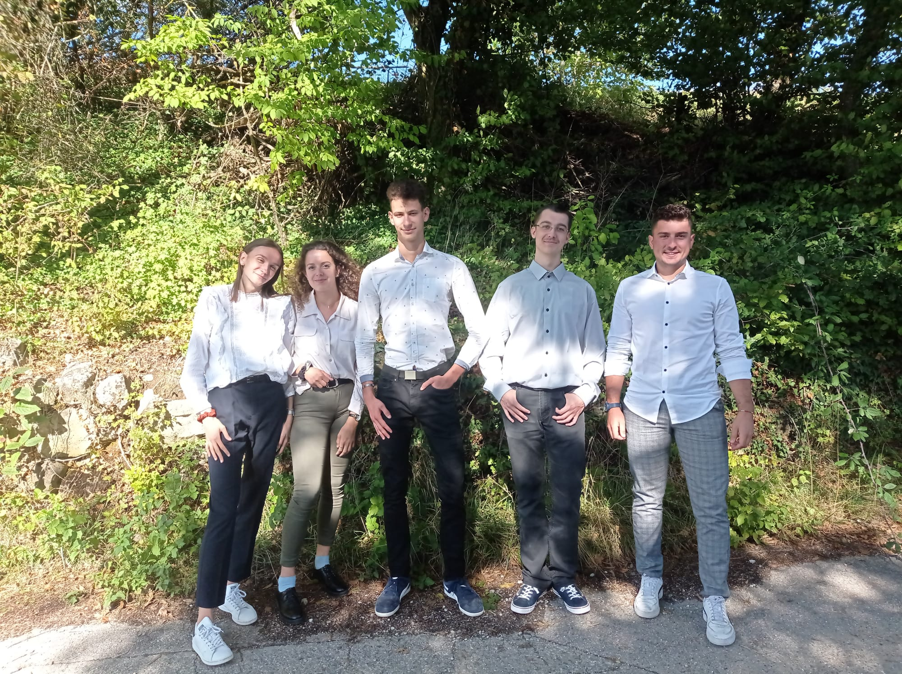

Les étudiants de BTSA Technico-Commercial Produit de la Filière Forêt Bois de l’ISETA de Poisy, s’investissent dans l’activité de la commune afin de mettre en pratique leur formation et d’obtenir leur propre budget de déplacement.
Des jeunes motivés et passionnées qui vous proposent un produit fard de la forêt: le fameux Sapin de Noël !